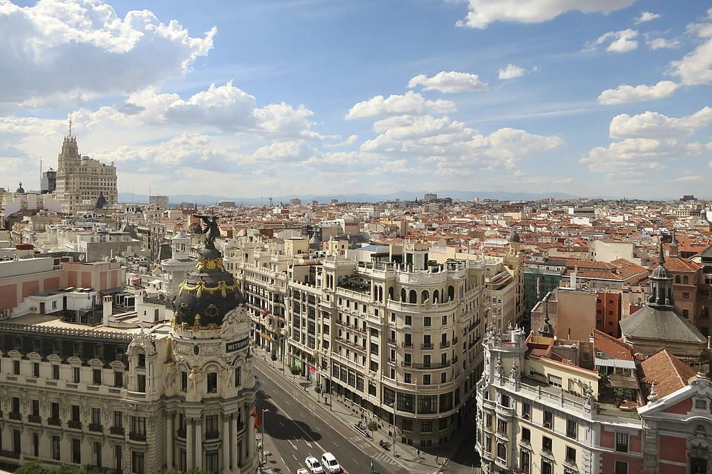

El primer nombre documentado es el que tuvo en época andalusí, مجريط Maǧrīţ (AFI [maʤriːtˁ]), que dio en castellano antiguo Magerit [maʤeˈɾit]), sobre cuyo origen se han formulado a lo largo de la historia multitud de hipótesis. La teoría más extendida hasta tiempos recientes era la del arabista Jaime Oliver Asín, quien afirmó en 1959 que Maŷriţ o Maǧrīţ (ŷ y ǧ son dos formas de representar el mismo sonido), deriva de maǧra, que significa «cauce» o lecho de un río, a la que se añadió el sufijo romance -it, del latín -etum que indica abundancia (los híbridos árabe-romance fueron frecuentes en al-Ándalus). En un primer momento, Oliver Asín afirmó sin embargo que el nombre actual de Madrid no procede de Maǧrīţ sino del romance mozárabe, Matrice, pronunciado Matrich con el significado de «matriz» o «fuente».
